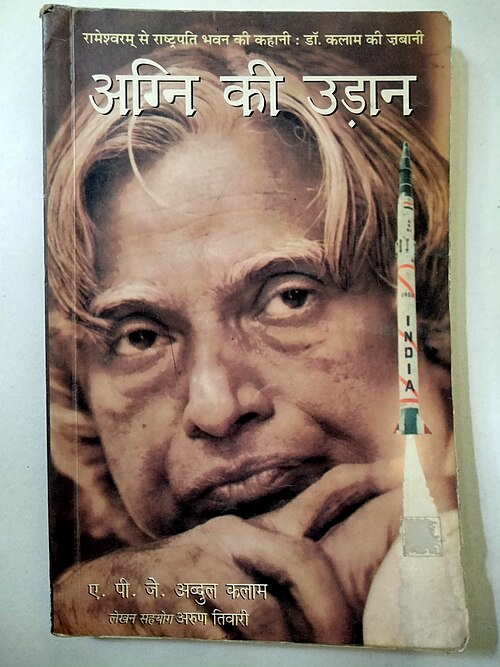

Introduction A.P.J Abdul Kalam
He was born on 15 October 1931, the son of a little educated boat owner in Rameswaram, Tamil Nadu. His father was also imam of the small mosque in Rameswaram. He had an unparalleled career as a defence scientist, culminating in the highest civilian award of India, Bharat Ratna. As chief of the country's defence research and development programmer, Kalam demonstrated a great, great potential for dynamics and innovations that existed in a seemingly moribund research establishment. This is the story of Kalam's own rise from obscurity and his personal and professional struggles, as well as the story of AGNI, TRISHUL, and NAG missiles that have become household names in India and that have raised the nation to the level of a missile power of international reckoning. Since independence, India has sought in various ways, self-realization, adulation, and success.

Orientation
A.P.J. Abdul Kalam, the book begins with the childhood of Kalam's life. In the beginning, he introduces us to his family and tries to familiarize us with his birthplace Rameswaram. In childhood, he was a great admirer of his father, Jainulabdeen. He was a man of great wisdom and kindness, and Pakshi Lakshmana Sastry, a close friend of his father and the head priest of the Rameswaram Temple. He had an ideal helpmate in his mother, Ashiamma. He was also influenced by his close friend, Ahmed Jalaluddin; he was about 15 years older than Kalam. With his friend, he talked about spiritual matters. This shows that he believed in spirituality and also believed in God or Khuda. He always went to Lord Shiva's temple with his friends. In the later part of the opening chapters, he introduces his cousin Samsuddin, his school teachers, and all the people who have felt any difference amongst them. Here he expresses one event, which happened in his school days, a new teacher at his school, could not stomach a Hindu Priest's son sitting with a Muslim boy. In accordance with our social ranking as the new teacher saw it, I was asked to go and sit on the backbench. I felt very sad, and so did my parents about the incident. Lakshmana Sastry summoned the teacher, and in our presence, told the teacher that he should not spread the poison of social inequality and communal intolerance in the minds of innocent children. He completed his school education in the Rameswaram Elementary School in Rameswaram and later on studied at Schwartz high school in Ramanathapuram. In 1950, he joined St. Joseph's College Trichi, to study for the B.Sc degree course when he realized that physics was not his subject. Then, at last, he applied to Madras Institute of Technology. He or his family could not afford to spend that much money on the course at Madras Institute of Technology. Zohara, his sister stood with him. When he had a specific branch of aeronautical engineering, the goal was very clear in his mind at that time. And he tried to communicate with different kinds of people. At Madras Institute of Technology, their teachers shaped his thoughts, Sponder, Kal Pandalai, and Narasingalu Rao. Each of them had carried distinct personalities. Last year of Madras Institute of Technology was a year of transition and had a great impact on his later life. From Madras Institute of Technology, he went out to Hindustan Aeronautics Limited, [HAL], at Bangalore as a trainer. There he worked on engine overhauling as part of a team. He had trained in radial engine-cum- drum operations. After the completion of engineering, he had applied for the Air Force and Directorate of Technical Development and Production –DTP and PC (Air) of the Ministry of Defence. But he was not selected in Air Force because he failed to pass the physical fitness standards. Later, he was appointed in DTP and PC (Air) as senior scientific Assistant on a basic salary only of Rs. 250 per month, in 1950. He had to create opportunities on his own. At this stage, he covered 32 eventful years of his life when he was just on the threshold of his career after graduation.
